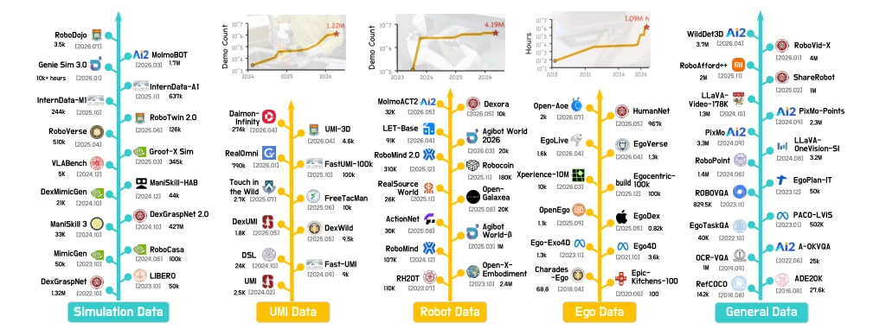
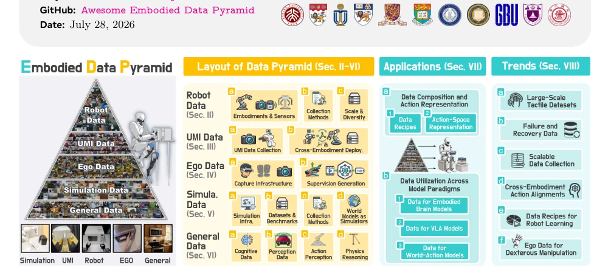
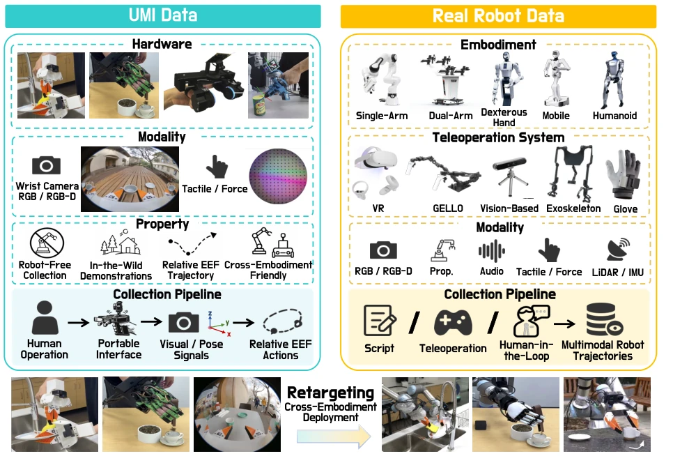
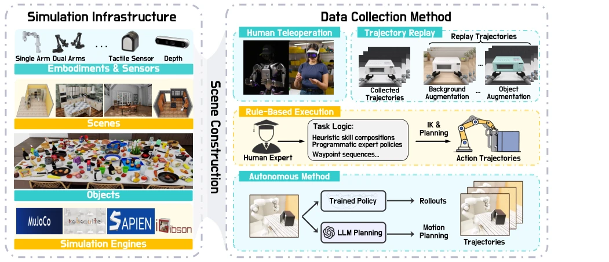
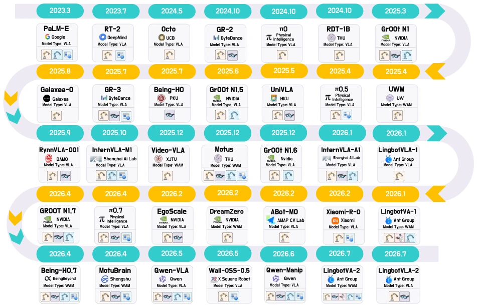
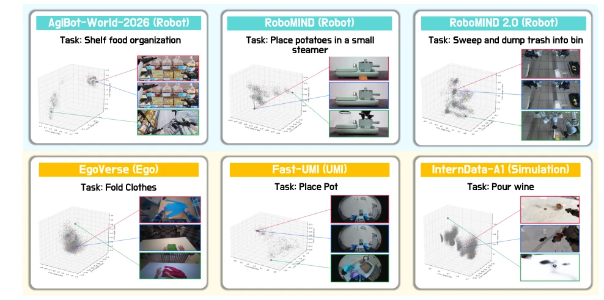
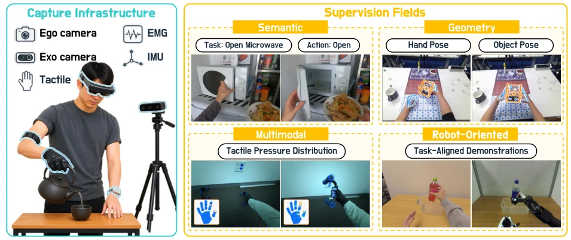
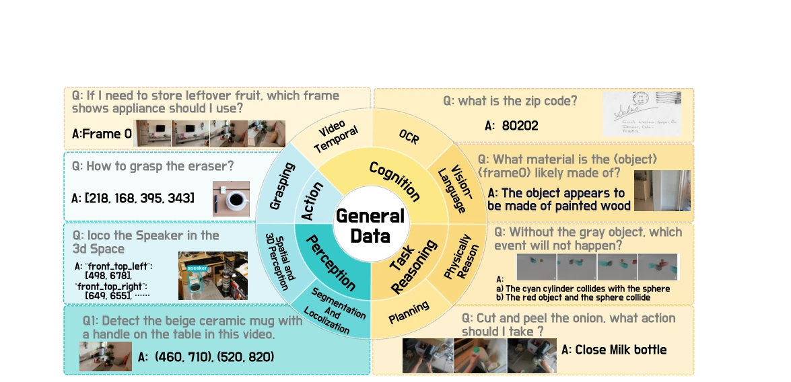

This paper draws a "pyramid" diagram for the chaotic embodied data landscape, stratifying real robots, UMI, human-eye perspective, simulation, and general data. The advantage lies in thoroughly elucidating the contradiction between "scalability" and "robot alignment", serving as a map for data classification that helps beginners find direction. The disadvantage is that it is a purely theoretical review, offering no new models or code, merely emphasizing the importance of "data recipes" while leaving specific mixing methods to guesswork. For PhD students just entering the field, it is a lifeline; for veterans, it may seem like "correct platitudes". However, organizing datasets is indeed arduous, and the GitHub repository is commendable. Additionally, the tactile data and failure recovery data mentioned are indeed pain points, though the solutions remain vague. Overall, this is a high-quality "data map" rather than an "alchemy guide", suitable for introductory literature reviews, but students seeking to directly reproduce the model may be disappointed.
研究动机Motivation
多模态大模型靠互联网数据就能学会看和说，但具身智能必须理解物理状态和动作，这没法走捷径。现有工作要么只关注模型架构，要么只谈特定子问题（如 VLA），缺乏对数据生态的系统化梳理 [446, 141]。虽然 Motus [18] 和 GR00T [20] 提过分层数据，但没分析不同来源在采集成本、物理保真度上的权衡。社区急需回答：到底该用哪些数据？怎么混合？现有数据源在可扩展性和机器人对齐上存在张力，缺乏统一标准导致重复造轮子。例如，真实机器人数据虽准但贵，仿真数据虽多但假，通用数据虽大但无动作，如何平衡是核心难题。
Multimodal large models can learn to see and speak relying on internet data, but embodied intelligence must understand physical states and actions, precluding shortcuts. Existing work either focuses solely on model architecture or discusses only specific sub-problems (e.g., VLA), lacking a systematic review of the data ecosystem [446, 141]. Although Motus [18] and GR00T [20] proposed layered data, they did not analyze the trade-offs of different sources regarding collection cost and physical fidelity. The community urgently needs to answer: Which data should be used? How should they be mixed? Existing data sources exhibit tension between scalability and robot alignment, and the lack of unified standards leads to reinventing the wheel. For instance, real robot data is accurate but expensive, simulation data is abundant but synthetic, and general data is large but lacks actions; balancing these is the core challenge.

Figure 2 Evolution of Data Scale. Evolution of data scale across the embodied data pyramid. From left to right, we select a subset of representative datasets from simulation data, UMI data, robot data, ego data, and general data to visualize their chronological scale growth. Simulation, UMI, and robot datasets are measured by the number of demonstrations, ego datasets by the number of collected hours, and general datasets by the number of question-answer pairs. The inset curves summarize the scale evolution of selected datasets within the corresponding data categories.
The core is the "data pyramid" classification method. The top layer is real robot data, with high physical fidelity but difficult to scale; descending layers are UMI data (handheld manipulator, no robot), human-eye perspective data (real physics but no robot actions), simulation data (low cost but physical approximation), and general data (semantically rich but no actions). Each layer is evaluated across dimensions such as quality, diversity, reusability, and physical fidelity. The paper also analyzes how different models (Embodied Brain, VLA, World-Action) utilize data from these layers, focusing on action space alignment and geometric alignment. Finally, it proposes six major challenges, such as tactile data and failure recovery data. Specifically, UMI data collects relative end-effector trajectories via handheld devices, solving the robot dependency problem; simulation data utilizes physics engines to generate parallel trajectories; general data provides semantic priors. Layers are connected via techniques such as Retargeting, forming a mixed training strategy. Additionally, the paper details the data collection paradigms of each layer, such as scripting, teleoperation, autonomous policies, etc., and compares the impact of different sensor configurations (RGB-D, tactile, force) on data quality, providing design principles for building next-generation embodied systems.

Figure 1 Overview of Organization and Scope. This work is organized into three parts. We first introduce the embodied data pyramid, which categorizes data sources into real-robot, UMI-style, egocentric-exocentric, simulation, and general data according to their scalability and robot alignment, and reviews their datasets, collection pipelines, embodiments, sensing configurations, supervision, scale, diversity, and transferability. We then examine how these heterogeneous sources support embodied foundation models. Finally, we discuss future directions in embodied data.

Figure 5 Overview of UMI data and real-robot data. Left: UMI data are collected with portable human-operated interfaces, emphasizing robot-free in-the-wild demonstrations, multimodal sensing, and relative end-effector trajectories. Right: real-robot data are collected on physical robot embodiments with diverse teleoperation systems, sensing modalities, and collection paradigms. Retargeting connects the two by transferring UMI demonstrations to executable robot actions for cross-embodiment deployment.

Figure 7 Overview of simulation infrastructure and data collection pipeline. The left panel summarizes the core components required for constructing simulation environments, including robotic embodiments and sensors, scenes, object assets, and simulation engines. The right panel categorizes representative trajectory collection methods into human teleoperation, trajectory replay with scene and object augmentation, rule-based execution based on expert-defined task logic and motion planning, and autonomous generation through trained policies or LLM-based planning.
This paper has no traditional training experiments, mainly conducting a review analysis of data usage in existing datasets and models. Figure 2 shows the evolution of data scale across layers over time, Figure 3 compares the data recipes of different models (e.g., RT-2, GR00T, Motus), and Figure 4 visualizes the action trajectory diversity of different datasets. By analyzing representative works such as Open-X-Embodiment [64] and RT-2 [24], it points out that the current trend is shifting from single real data to mixed data. It finds that the proportion of simulation and general data increases, but real robot data remains core. The text lists numerous datasets (e.g., RH20T, AgiBot World), providing statistics on their scale, modalities, and task types, revealing the imbalance of data distribution, especially the scarcity of tactile and failure data. Additionally, the paper compares the pros and cons of different collection paradigms (scripting, teleoperation), and evaluates the differences in data requirements for different model architectures, providing a quantitative basis for future data collection.

Figure 3 Evolution of Data Utilization. Evolution of data utilization in representative embodied foundation models. Early systems primarily rely on real-robot trajectories, whereas recent systems increasingly explore co-training with real-robot, egocentric, simulation, general, and UMI-style data. The architectural landscape also expands from action-centric VLA systems toward world-model-augmented and unified world-action models. Data sources are indicated by real-robot data, egocentric data, UMI data, simulation data, and general data.

Figure 4 Visualization of action-trajectory diversity across representative datasets. Key action frames are extracted using a heuristic procedure following PerAct [314]. Under comparable initial configurations, the spatial distribution of grasping and interaction keyframes provides a proxy for the diversity of demonstrated trajectories. Human-hand trajectories are processed with an analogous heuristic to extract corresponding hand keyframes.
其他图片Other Figures

Figure 6 Overview of capture infrastructure and supervision representations in egocentric and exocentric data. Wearable and external cameras, motion trackers, and auxiliary sensors record complementary raw signals, which are subsequently annotated, reconstructed, or aligned to form semantic, geometric, multimodal, and robot-oriented supervision.

Figure 8 Overview of General Data Categories. Overview of general data categories and representative tasks, spanning cognition, task reasoning, perception, and action, with examples of vision-language QA, OCR, video temporal reasoning, physical reasoning, planning, segmentation and localization, spatial and 3D perception, and grasping.